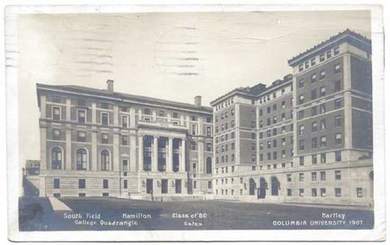

Mihajlo Pupin was an ethnic Serb, born on 4 October (22 September, O.S.) in the village of Idvor (in the modern-day municipality of Kovačica, Serbia) in the region of Banat, in the Military Frontier of the Austrian Empire, 1858. He always remembered the words of his mother and cited her in his autobiography, From Immigrant to Inventor (1925):
My boy, If you wish to go out into the world about which you hear so much at the neighborhood gatherings, you must provide yourself with another pair of eyes; the eyes of reading and writing. There is so much wonderful knowledge and learning in the world which you cannot get unless you can read and write. Knowledge is the golden ladder over which we climb to heaven; knowledge is the light which illuminates our path through this life and leads to a future life of everlasting glory.
For the next five years in the United States, Pupin worked as a manual laborer (most notably at the biscuit factory on Cortlandt Street in Manhattan) while he learned English, Greek and Latin. He also gave private lectures. After three years of various courses, in the autumn of 1879 he successfully finished his tests and entered Columbia College, where he became known as an exceptional athlete and scholar.
A friend of Pupin's predicted that his physique would make him a splendid oarsman, and that Columbia would do anything for a good oarsman. A popular student, he was elected president of his class in his Junior year. He graduated with honors in 1883 and became an American citizen at the same time.
After Pupin completed his studies, with emphasis in the fields of physics and mathematics, he returned to Europe, initially the United Kingdom (1883–1885), where he continued his schooling supervised by John Tyndall at the University of Cambridge. He obtained his Ph.D. at the University of Berlin under Hermann von Helmholtz and in 1889 he returned to Columbia University to become a lecturer of mathematical physics in the newly formed Department of Electrical Engineering. Pupin's research pioneered carrier wave detection and current analysis.
